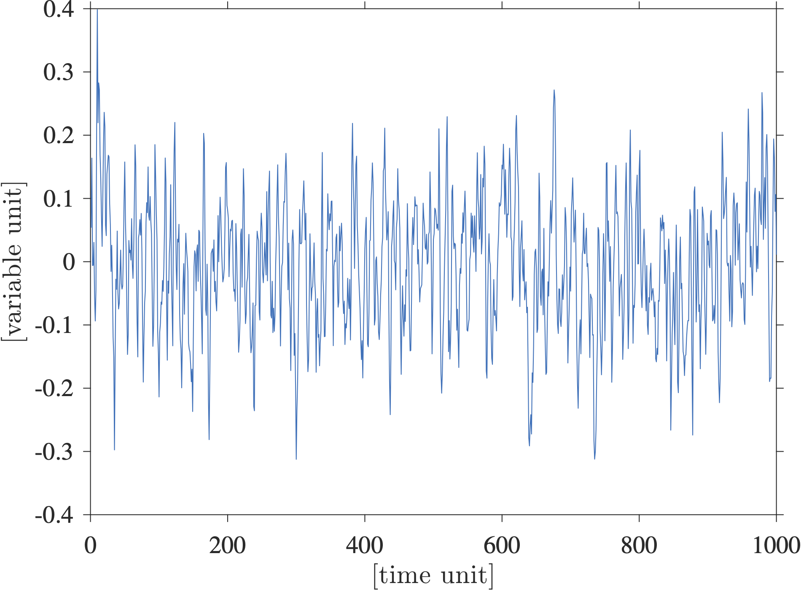
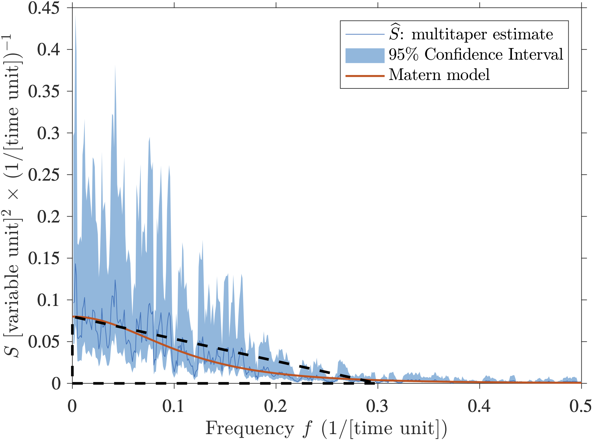
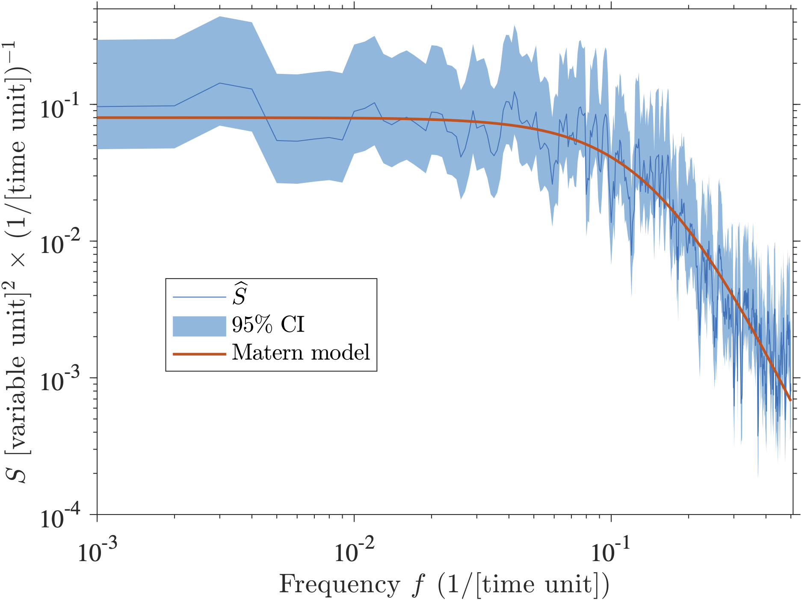
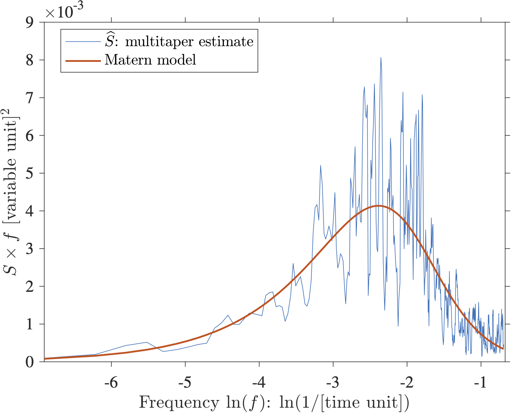

I have been surprised by the continuing use of variance-preserving spectra in the oceanographic literature as a tool to diagnose periodicities in time series (this does not seem to happen in the purely climate literature … we, oceanographers, are often a bit behind). Since I don’t think I know much, I often seek out the help of a couple of statistician friends that deal with time series (like all the time). I have casually asked them: “Why do you think people use variance-preserving spectra?”. Their answer was revealing: they did not even know what a variance-preserving spectrum was! Once I explained to them (see below), they were even more confused. They also wondered what was wrong with us (oceanographers). On a more serious note, what concerns me is that we collectively spend millions of tax-payer dollars to obtain amazing time series of oceanographic variables (such as oceanic volume transport), and sometimes analyze them with the wrong tools, unfortunately. We need to collectively do better.
So, I have decided to write a little note to demonstrate why variance-preserving spectra should not be used to make conclusive statements about periodicity in a time series, and to suggest alternative methods. I have recently become a research assistant professor, and thus I am trying to get a bit more in the teaching side of things (I do not teach at my institution which is what the research epithet means). So here you go, I writing this blog post to give some pointers. Let me know if I am doing it all wrong at selipot@rsmas.miami.edu or please comment below.
One definition of the frequency spectrum (there are several) is that it is the Fourier transform of the autocovariance function , or in other words, that the spectrum and the autocovariance function are Fourier transform pairs:
This is called the Wiener–Khintchine theorem (the spelling of Khintchine varies). When the expression above is evaluated at zero lag , one obtains that the variance of your time series, , is the integral of the frequency spectrum:
This is why I personally think estimating a spectrum is the most useful: it shows the frequency decomposition of the variance of your time series. It allows you to state something about where the energy of your signal resides. If you are new to spectral analysis you could start with my lecture on time series analysis or the entire course on the subject by my colleague oceanographer Jonathan Lilly. At the bottom of this post you will find also some good book references including the excellent Percival and Walden (1993) Spectral Analysis for Physical Applications.
Now to the topic of this post: another typical use of spectral (or harmonic) analysis in physical oceanography is to look for quasi-periodic signals in a time series, such as a seasonal or an annual cycle. People are looking for “peaks”, which amounts to looking for patterns in a time series. This seems to be a very human trait because in oceanography exactly periodic signals are actually rare, and purely monochromatic signals (one frequency) even more so. As a side note, a typically erroneous interpretation of a spectrum I often hear is about a semi-annual peak (6-month period). Typically the reason for such a peak is not that there is a physical process at that specific frequency, but more likely that it is a harmonic of the annual, and lower, frequency. In other words you have a periodic signal with a 1-year period but it is not a pure sinusoid, and more than one frequency is needed to describe the periodic process (That’s the principle of Fourier series decomposition).
Here I want to show a synthetic example of a time series that is not unlike many published oceanographic time series, and show how a variance-preserving spectral plot of this time series can lead to misidentifying peaks. Below is shown a randomly generated real-valued time series with points. I generated and scaled this time series so that its variance is and thus its standard deviation is :

This time series is actually one realization of a Matérn process with a spectrum given by
where is just a normalizing constant. To generate this time series I used a freely accessible Matlab toolbox called jLab written by Jonathan Lilly. I like this model because it fits nicely a lot of oceanographic time series I have looked at, including Lagrangian time series and time series of oceanic transports. In fact, I have used that model to conduct some testing on the statistics of transport time series of the AMOC in my Elipot et al. 2017 paper. The point of using this model is that there is absolutely no periodicity in this signal; it has a continuous spectrum with no peak. What does a peak in a spectrum mean anyway? I think it should mean that the spectral power at a single frequency is much greater than neighboring frequencies, or that it is much more than what you would expect under the hypothesis that your observed process (i.e. time series) is representative of some noise-like process, white or colored. There is nothing wrong with a noise-like process by the way, on the contrary it tells you a lot about your observations.
Now, how does a spectral estimate of this time series look like? The next figure shows a multitaper spectral estimate which is really one of the best methods around to estimate a spectrum in a non parametric way (i.e. not knowing its shape, see my lecture as an example on how to implement it practically). The estimate is shown in blue, the non-symmetric 95% confidence intervals are shown in lighter blue, and the theoretical spectrum is shown in red.

You may say that the estimate in blue is very different from the true spectrum in red. That is however the nature of spectral estimation using finite time series. There is no added noise in the time series, only the process described by the theoretical spectrum. From discrete and limited data, the true spectrum is not accessible, it can only be estimated, sometimes poorly. By the way, with this plot, if you have scaled your spectrum properly, you can probably estimate the variance of the signal since it is the area under the curve according to the Wiener–Khintchine theorem given above (Here I would eyeball that the area under the spectral estimate is about the area of the drawn triangle so approximately which is the variance I specified above).
Now, because the variance of a typical time series in oceanography spans a very wide range of magnitude over a wide range of temporal scales, it is typical to plot a spectrum on a so-called log-log plot, that is with the two axes shown on a logarithm base 10 scale:

I am sure this type of spectrum looks very familiar to many: a plateau towards the zero frequency, a shoulder break at mid-frequencies, and a power-law behavior at higher frequencies that manifests itself as a linear slope in this log-log representation. One issue with such log-log plot is that it really emphasizes the lowest frequencies which are nothing special compared to all the other ones in a statistical sense. However, we care about the lowest frequencies because we are often interested in long time-scale processes. We typically received funding to collect an oceanographic time series for as long as we could and really would like to know about the period as long at the length of our experiment (hence I suggest the use of the multitaper that can achieve that, and not the Welch’s method or any method that chop your time series in segments). Cool, now, see any peaks? Maybe, but really, there are none by construction.
So now, let’s consider a variance-preserving spectrum instead (sometimes also called an area-preserving plot). Such plot has nothing to do with the estimation of the spectrum itself, it’s just a different kind of plot. A google search leads to a note written by my PhD advisor (who knows a lot about statistics) about what that beast is. I think it is also described in Emery and Thompson, as well as in Carl Wunsch’s primer on time series analysis. Now, using the fact that , one can rewrite
Here, is the natural logarithm (logarithm base ) not the common logarithm (base 10). The idea behind this transformation is that when one plots on the “y axis” versus on the “x axis”, the area under the curve between two frequencies is proportional to the variance in the range of frequencies defined by these two frequencies. It compensates for the “squeezing” of the high frequencies and the “stretching” of the low frequencies in the previous plot above. So now a variance-preserving version of the previous plots is:

In this plot the y-axis is in units of variance of your variable, and the x-axis is this weird logarithm unit. So now, see any peaks? Well, maybe there are peaks between and ? Even the theoretical spectrum would suggest that there is a “hill” near that range of frequencies … wouldn’t that be a peak? Nope. Nevertheless, the frequencies near that hill are the frequencies for which the Matérn process transitions from a “white” (flat) type of spectrum to a power-law (self-similar) type of spectrum. This range of “transition” frequencies is actually controlled by the damping parameter of the theoretical spectrum (see equation above). If you’d like to know more, you could read Lilly et al. 2017.
But in the end, there are no peaks. Unfortunately, I have seen many papers claiming that peaks existed solely on the basis of a plot just like the one above. I think a variance-preserving spectrum is actually very misleading when investigating periodicities. I don’t recall reading any papers that use this representation for the purpose of using the area under the spectral curve to relatively quantify the distribution of variance.
So, in the end, how does one look for peaks? I don’t think I have ever published a paper without a spectral estimate in it and I am still approaching this question with apprehension. I still think that it is not simple and this should be the subject of another post (hopefully the next one). One could start however by using the confidence intervals as there are established formulas to calculate those! Given the confidence intervals displayed in the linear or logarithmic plots shown above, one could qualitatively say that there are no outstanding peaks in this example. Otherwise, I personally use a statistical test for periodicity in colored noise given by Thomson (1982) and described nicely in Percival and Walden, (1993). Peaks in colored noise is the most common situation I have encountered in physical oceanography. I have coded it in Matlab, send me an email and I’d be happy to share.
The Matlab script to generate the figures above is available at a GitHub repository. My apologies for still using a proprietary computation software. I think that script should also work in the free Matlab-look-alike Octave software but I have not tested it.
References
[3] Jenkins, G.M. and Watts, D. G. (1968), Spectral Analysis and its Applications, Holden-Days.
comments powered by Disqus